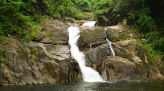

Main Attractions
Edakkal Caves
Located at about 1200 ft above the sea level, the Edakkal Caves are among the oldest human settlements ever discovered. Inside the caves are pictorial drawings and engravings that indicate the presence of ancient human settlements in the region.
Despite their name, the Edakkal Caves are not actually caves. They are part of a pre historic rock shelter, formed naturally when one huge boulder got wedged between two bigger ones. The name Edakkal itself means “a stone in between”.
Lakkidi View Point
Lakkidi View Point – It is a spectacular view point with snooty misty mountain peaks and tiny burbling streams that runs down from the rock behind. The great panoramic view of the subterranean valley mingled with serpentine Ghat road is a ‘not to miss’ place while visiting Wayanad. The scenic beauty of this view point is at its full splendor in morning and evening. It is known as the gate way of Wayanad. It is the last portion of Ghat section, at an amazing height of 700 meter above mean sea level.
Lakidi View Point, as a whole, is known for its richest bio-diversity in Western Ghats and Lakkidi is renounced as Chirapunji of Kerala with highest rainfall annually.
Meenmutty waterfalls

Nestled away in Wayanad’s lush, deep forests, Meenmutty Waterfalls is a mesmerising sight. Its pristine cascading waters plunging in tiers make up for a dazzling view. Meenmutty isn’t only a popular tourist attraction in Wayanad but also a treasured adventure destination.
Meenmutty Waterfalls is a beautiful and serene place hidden amidst forests, and it’s a prime attraction for adventure seekers. From the top, you can see the entire valley below and the surrounding mountains. The trek through the calming natural beauty is an experience in itself.